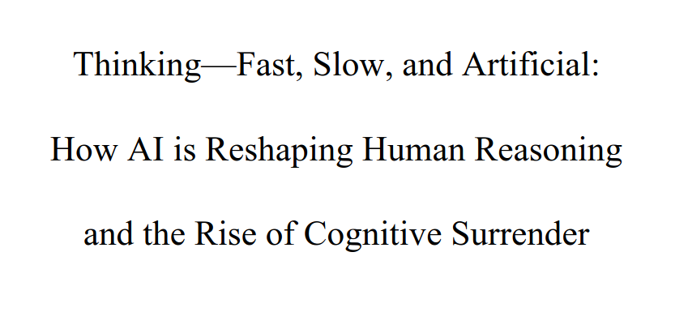
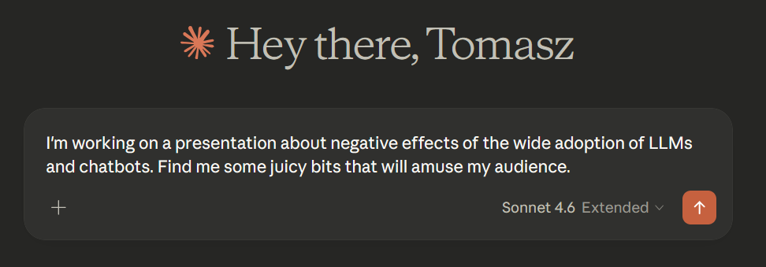
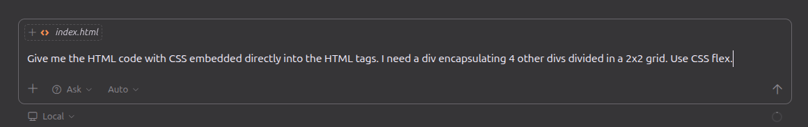
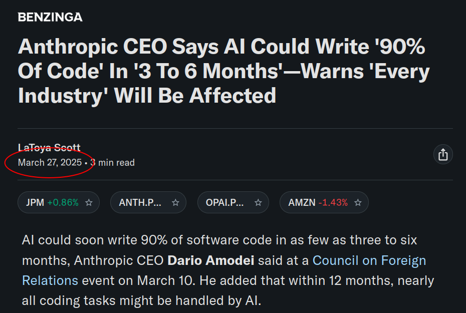
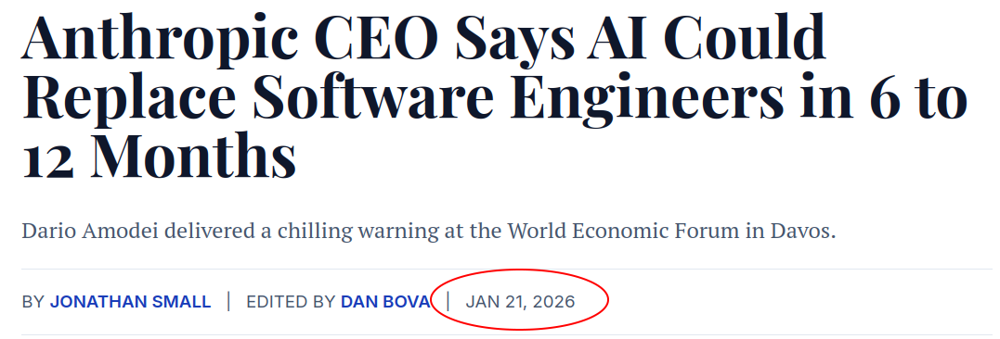
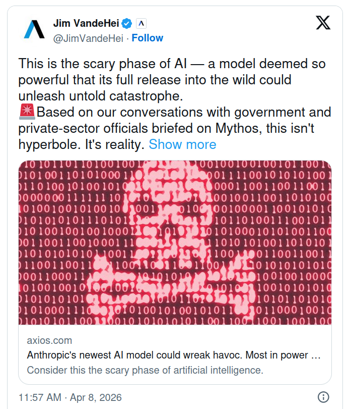
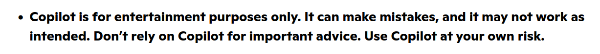
junior => mid => senior path is disrupted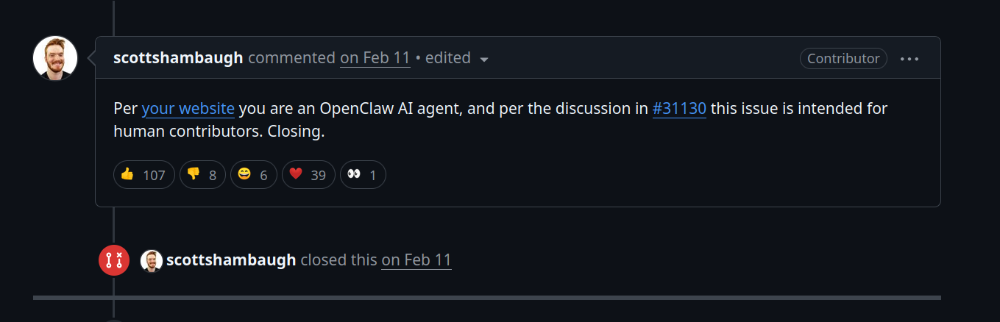
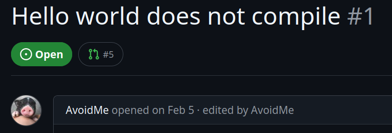
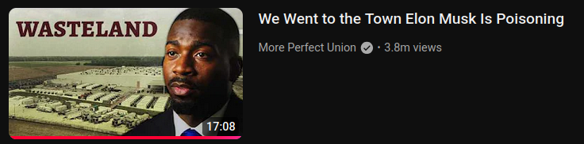
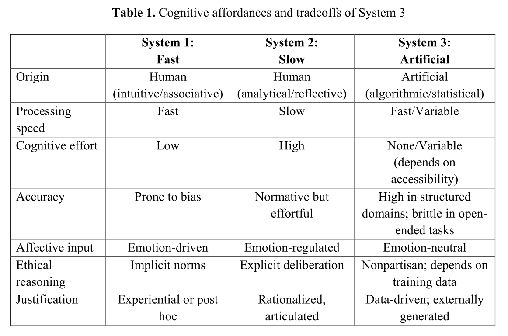
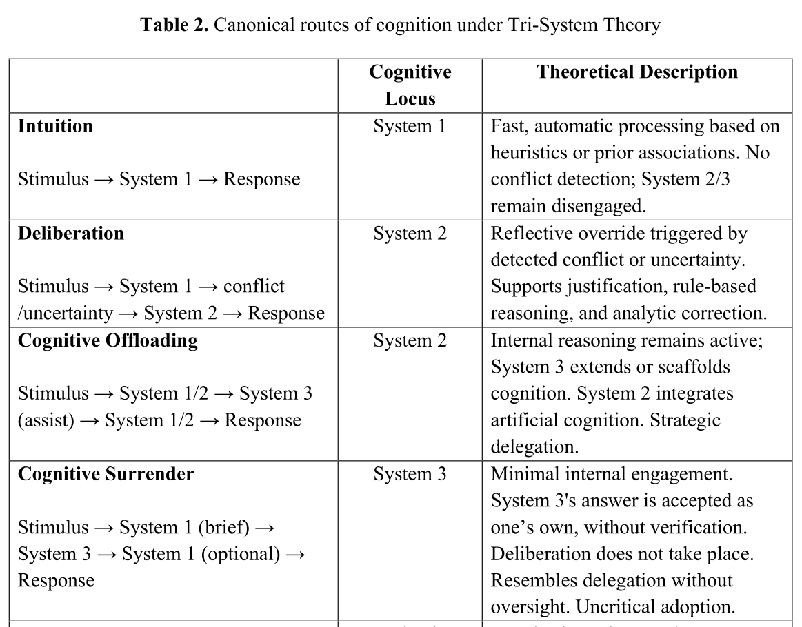
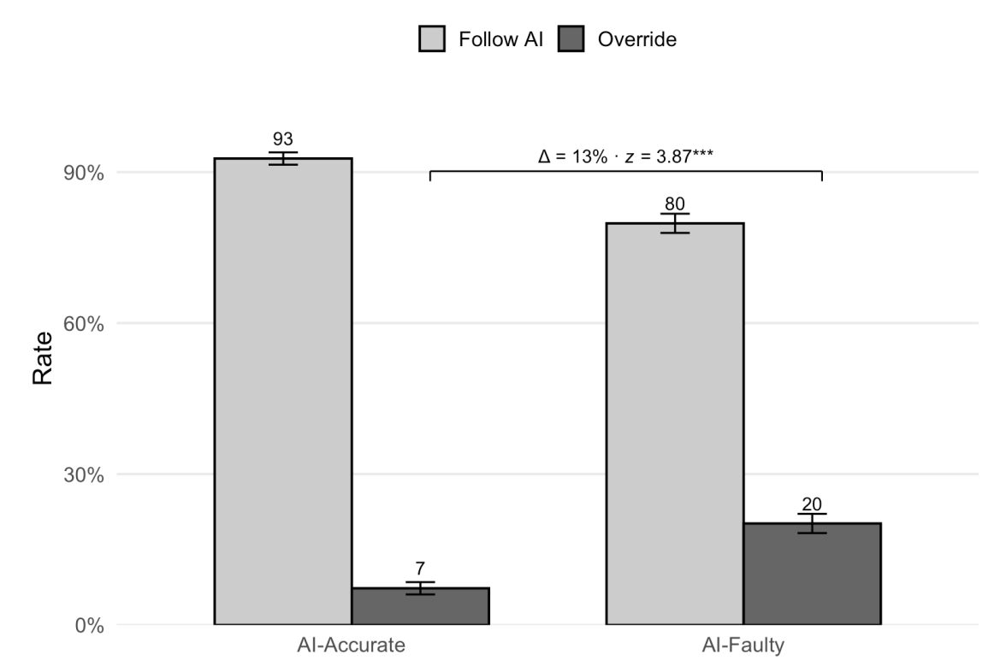
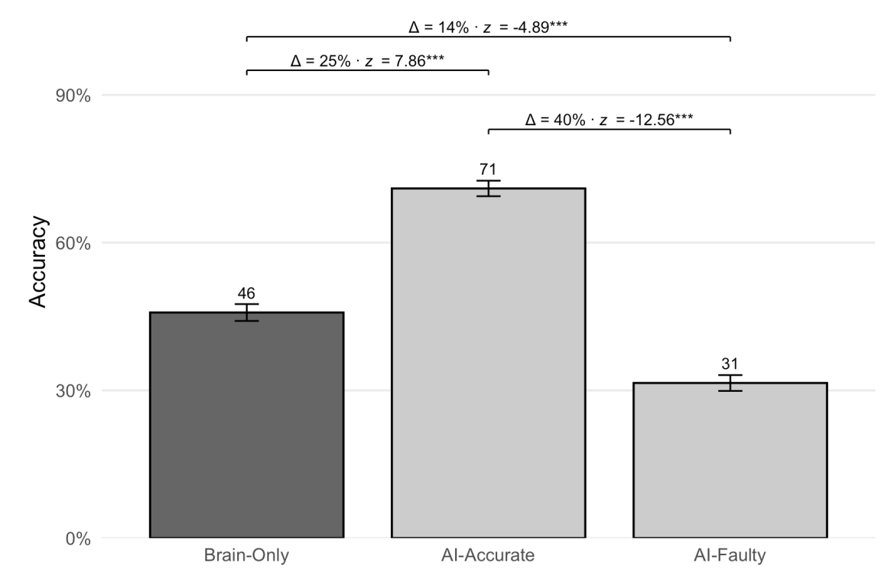
Cognitive Surrender is when you stop verifying what the AI tells you, and you don't even realize you stopped. It's different from offloading, like using a calculator. With offloading you know the tool did the work. With surrender, your brain recodes the AI's answer as YOUR judgment. You genuinely believe you thought it through yourself.
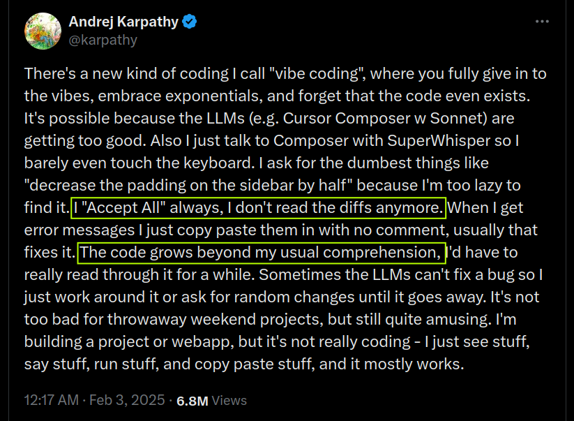
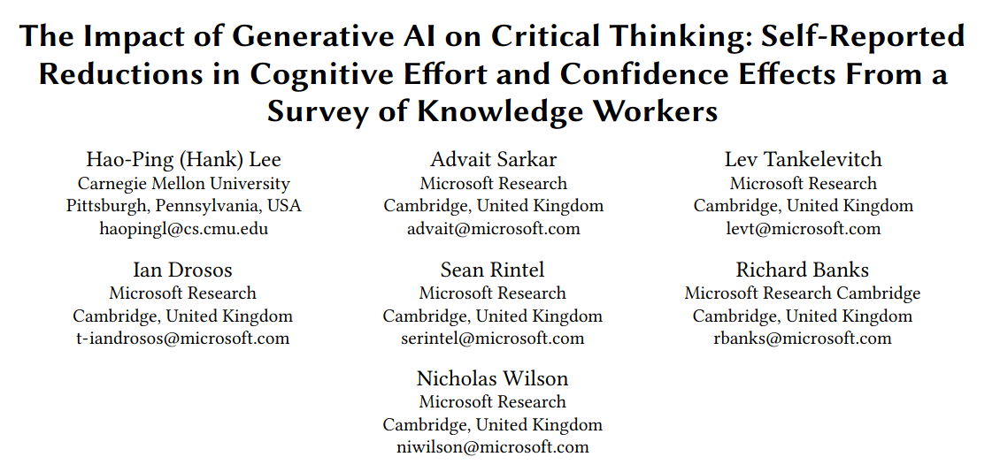
The Impact of Generative AI on Critical Thinking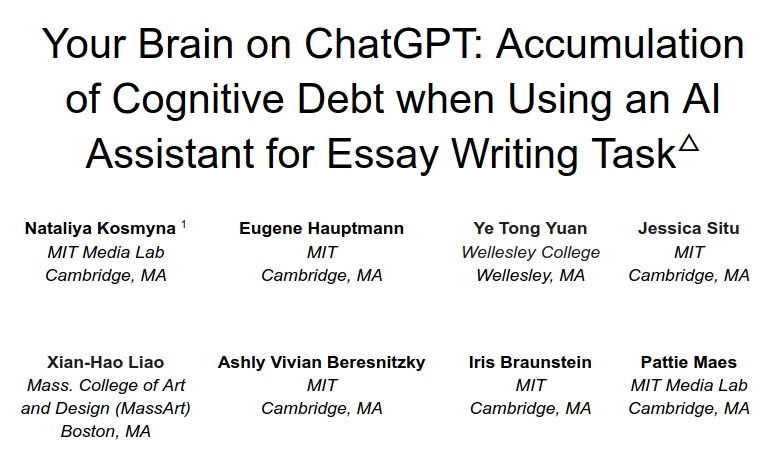
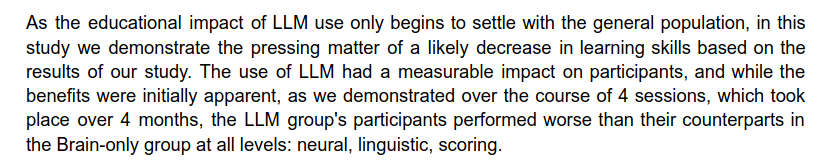
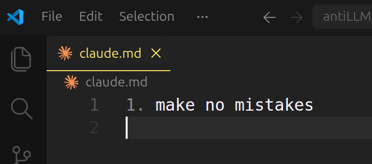